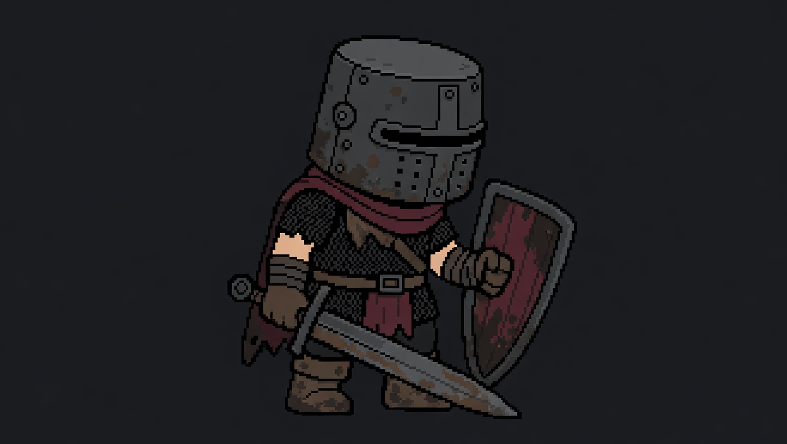

A — Flat fine raster
Flat stepped pixel clusters; broad dark fills replace the modeled metal sheen. Huge helmet and very short body are preserved. Rust and torn cloth add wear, although the pose is less exhausted than B/C. Unrequested circular helmet fitting, exposed light arms and overly broad red shield panel need correction. Camera remains too shallow/unverified.